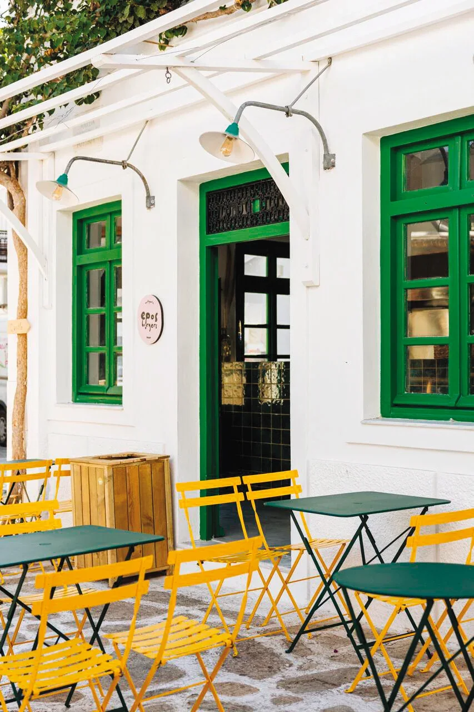
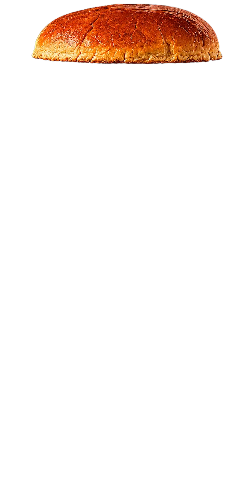
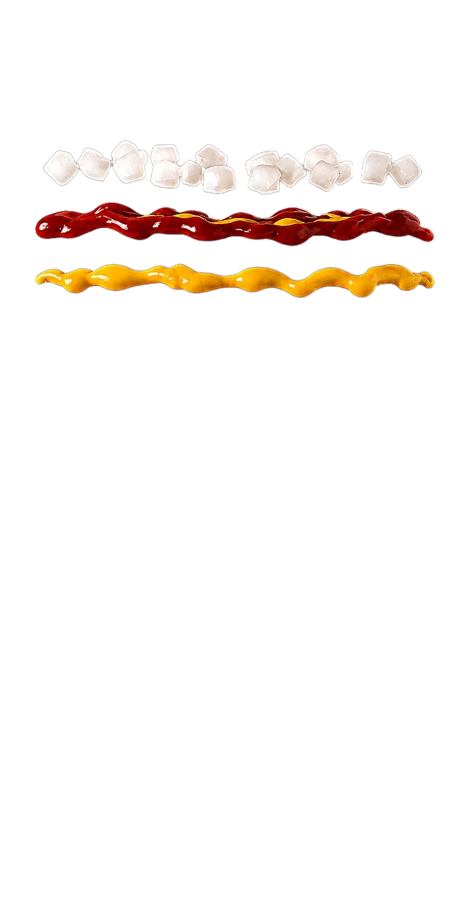
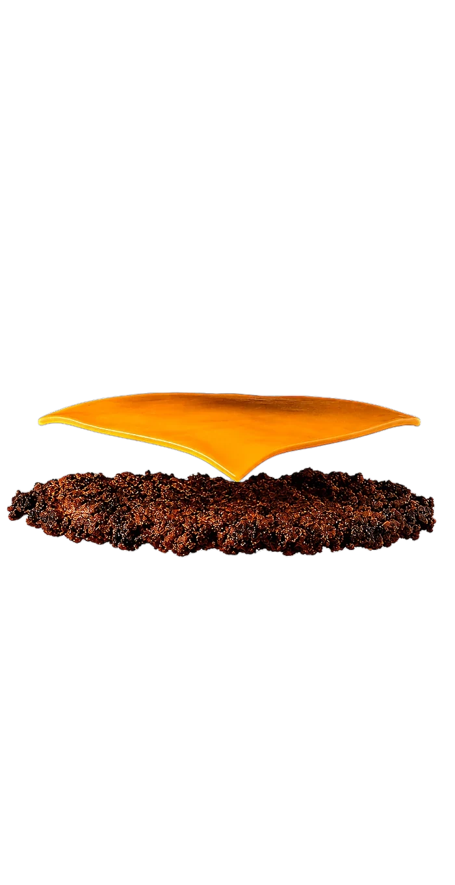
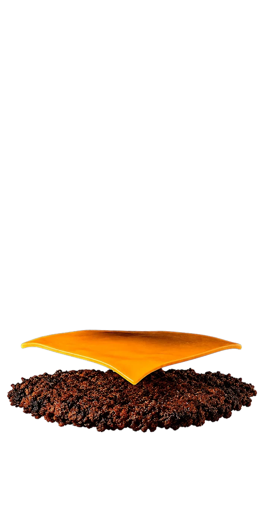
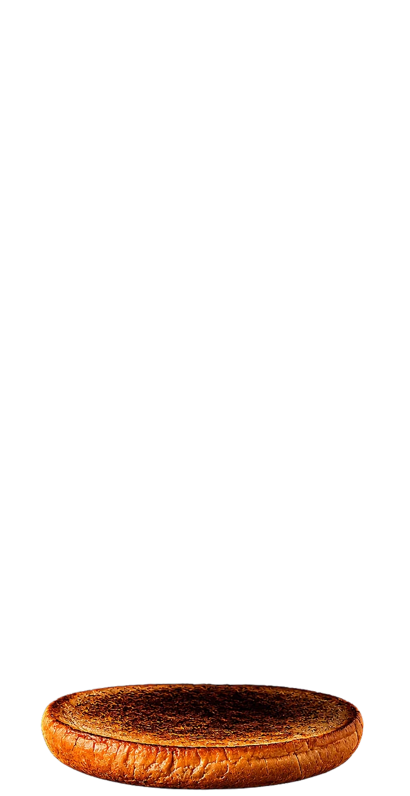

Epos started on Antíparos, where one smash burger earned a cult following. Now it's landed in Glyfáda, with the same flat-top obsession and crispy edges.

The original — Antíparos





On the side
Fries and drinks.
Sides
French FriesGolden, crispy, and perfectly salted€5.00